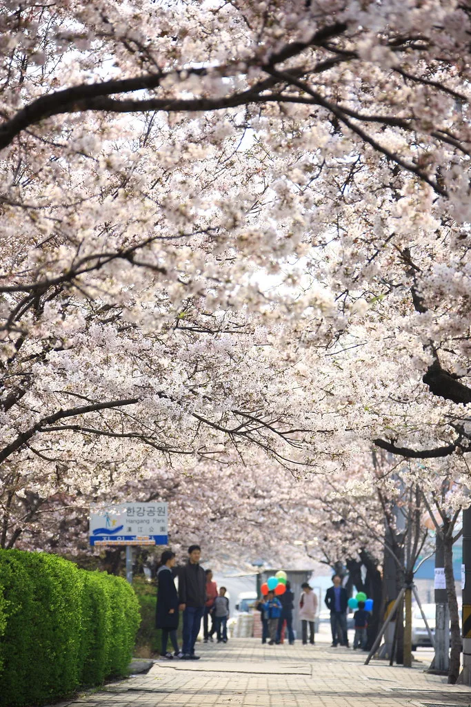
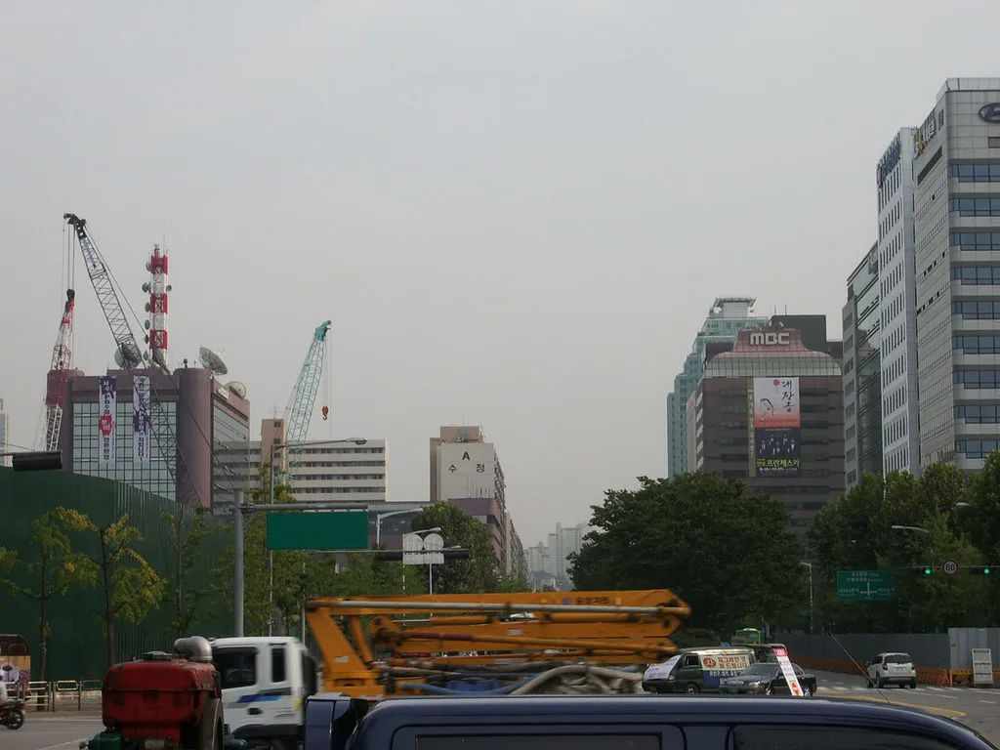

6개 부처 장관 후보자 인사청문 정국 개막…여야 '검증 전쟁' 예고
이재명 대통령이 지난달 30일 단행한 6개 부처 개각의 후속 절차가 본격화하고 있다. 경제부총리 겸 재정경제부 장관 후보자를 비롯한 장관 후보자들이 인사청문회 준비 사무실로 출근해 자료 검토와 예상 질의 대비에 들어갔고, 국회는 정기국회 일정과 맞물려 청문 정국에 돌입했다.
이번 개각 대상은 경제부총리(이형일), 법무부(김승원), 국방부(강신철), 성평등가족부(용혜인), 국토교통부(홍지선), 중소벤처기업부(이소영) 등 6곳이다. 재정경제부 1차관 출신인 이형일 후보자는 물가와 부동산, 대미 통상 협상 등 현안을, 예비역 대장으로 한미연합사 부사령관을 지낸 강신철 후보자는 전시작전통제권 전환과 한미동맹 조율을 주요 과제로 안고 있다. 국토교통부와 중소벤처기업부 후보자는 각각 주택 공급 대책과 소상공인 지원이라는 민생 과제를 떠안았다. 대통령실은 이번 인선을 두고 정책 성과를 낼 수 있는 '실행형 내각'을 염두에 뒀다고 설명했다.

더불어민주당은 추석 연휴 전에 청문 절차를 마무리하겠다는 목표를 세웠다. 대통령이 인사청문요청안을 국회에 보내면 국회는 20일 이내에 청문 절차를 끝내야 한다. 여당은 9일부터 대정부질문을 시작으로 정기국회를 가동하면서, 청문회를 신속히 열어 새 내각의 진용을 조기에 갖추겠다는 구상이다.
국민의힘은 철저한 검증을 벼르고 있다. 야당은 일부 후보자의 자질과 이해충돌 문제를 제기하며 "부실 인사"라고 비판하고 있고, 여당은 "실용과 전문성을 갖춘 인사"라고 맞서고 있다. 현역 의원 출신인 김승원 법무부 장관 후보자를 두고는 진행 중인 사건의 공소 유지·취소를 둘러싼 논란이 청문회의 쟁점으로 떠올랐다.
가장 큰 파장을 일으킨 것은 용혜인 성평등가족부 장관 후보자다. 비례대표 국회의원인 용 후보자는 장관이 되더라도 의원직을 유지하겠다는 방침을 밝혔다. 관례상 비례대표는 입각 시 의원직을 내려놓지만, 용 후보자는 자신이 사퇴하면 소속 정당이 원외 정당이 된다는 이유를 들었다. 이를 두고 여당 내부에서도 "과도한 겸직"이자 "위성정당 논란을 키우는 일"이라는 비판이 나왔고, 일부 여성단체는 정책 전문성 문제를 제기했다. 야당은 임명 자체를 반대하고 있어 이 후보자의 청문회가 가장 격렬할 것으로 예상된다.

인사청문회는 후보자의 도덕성과 정책 능력을 검증하는 자리지만, 국회가 청문경과보고서를 채택하지 않아도 대통령이 임명을 강행할 수 있다. 이 때문에 청문회가 실질적 검증보다 정쟁의 무대가 된다는 지적이 반복돼 왔다. 20년 만의 여성 국무총리인 한성숙 총리 체제에서 이뤄지는 이번 개각이 어떤 평가를 받을지가 시험대에 올랐다.
청문 정국은 정기국회 초반의 최대 변수다. 800조원대 규모로 편성된 내년도 예산안 심사와 국정감사가 줄줄이 대기하고 있어, 청문회가 파행하면 국회 일정 전반이 밀릴 수 있다. 여기에 부동산·검찰 개혁 관련 법안 처리를 놓고도 여야가 맞서고 있어, 청문회 결과가 정기국회 전체의 협상 분위기를 가를 것이라는 관측이 나온다. 여야가 후보자 검증을 놓고 얼마나 접점을 찾느냐에 따라 새 내각의 출범 시점과 국정 동력도 달라질 전망이다.